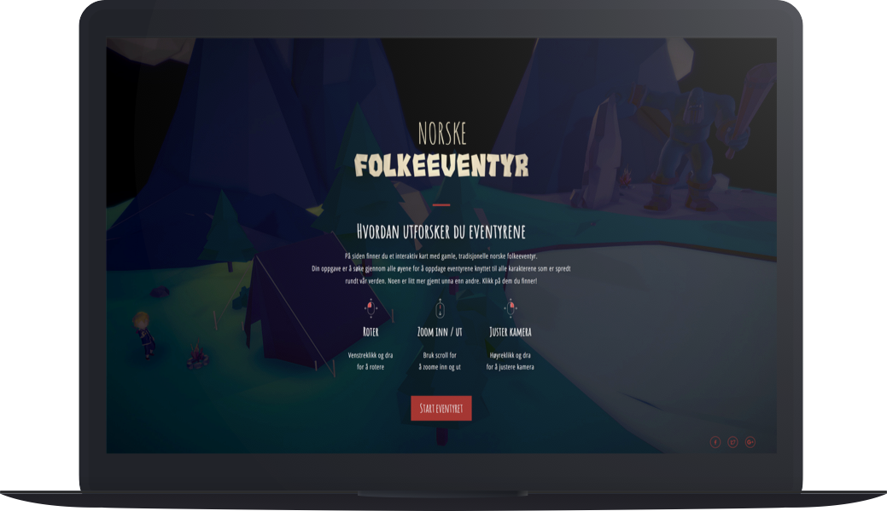
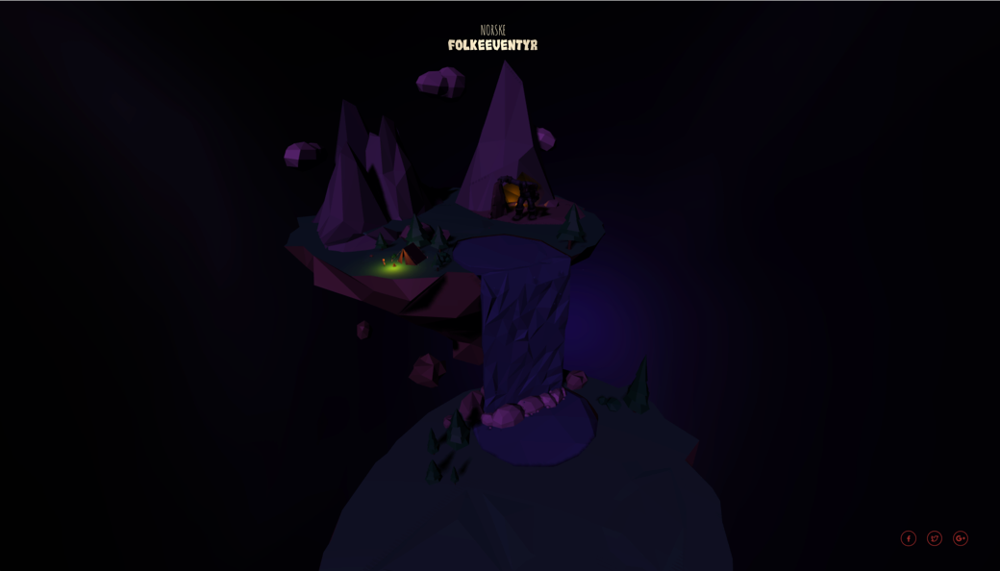

By
Robin Ingebrigtsen
Kenneth Jørgensen
Work
Conceptualization, 3D modelling, Three.js / WebGL & web development
Interactive website
Connecting traditional folk values with digital experience
In a world where stories and folklores are rife for telling and visualising, we had a wish to continue this trend to our very own Norwegian folklores.
Our children grows up with all sort of technological devices in the digital life, in which we wanted to capsulize the stories told in an interactive platform to present and modernise them in our own way.
